来源：https://vb5bdj4t4a.feishu.cn/docx/ZbxHdt8nRoi64KxjkEvcuHQNn8g
大家好，我是吉良吉颖，去年通过捕捉到亦仁发的露营经济风向标，开始在闲鱼卖露营装备
我做这个生意是去年4月初开始做一直到5月底才开始有起色的，从最开始的一个账号每天100多的收益，到后面5个账号每天800-1000的收益，目前这一年我从这个项目获得的收益快小20W了
而且我目前只在闲鱼做这一个领域，除了卖露营装备没卖别的
包括去年我带着搞的这个赛道的几个小伙伴，只要执行力强的，没有谁月入低于8k的，如果你正好在做闲鱼又不知道卖什么，那就来试试卖卖露营装备
本来以为这个项目最多就火完去年今年肯定不怎么赚钱了，没想到今年依旧很可观
先给大家看一下我今年近两个月的战绩
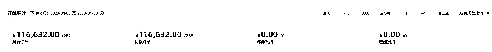
这个是4月整月的，纯利润除掉退款的纯利润在2W+，因为受五一假期的加持整个四月成绩还是相当不错的，在各大节假日前买的人会非常多
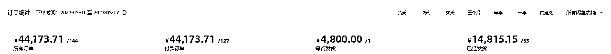
这个5月的，截止到今天我写这个稿子的时间是17号，除掉退款的净利润在9000+
而且今年我是一边上班一边搞，就两个账号，花在这个上面的时间也没有去年多了，所以这个项目今年依旧可以搞
好秀完了战绩就直接进入干货，接下来我会从这五个部分去分享这个项目是如何操作的
1.账号打造
2.选品&货源
3.文案配图如何选
4.如何快速起号
5.闲鱼之外的延伸——私域&小红书
6.结语
闲鱼还是一个人买家与个人卖家之间的交易平台，只要你想在闲鱼上长期卖货赚钱，面子功夫是一定要做好的。尤其是像我们这种做垂直赛道的，就最好是有一个符合售卖物品的人设。然后中一系列的信息也是为成交做辅助的
同时也给大家看几个案例。这两个都是在闲鱼上只做露营装备且销量非常不错的账号
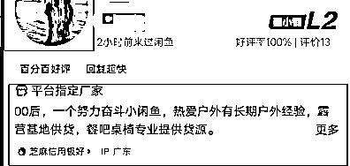
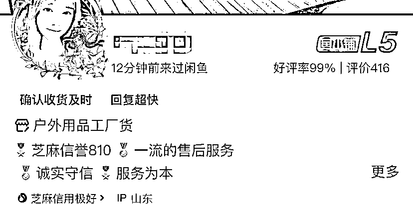
主要设置的就三个部分：
找个一个跟户外露营相关的就行，让人第一眼就能看出来你是做什么的
最好是女生头像，不管你是男生还是女生我都比较建议用女生头像。因为我自己是做互联网营销工作的嘛，在线上交易好看的女生头像天然成功率就更高一些
描述一下自己的背景，可以说你是线下店主，品牌代工厂，倒闭的露营地等等，也可以展示你的芝麻信用分
主要展示信息就这些，次要信息比如年龄，地址，毕业学校那些随便填保证信息完整度就可以。买家对你个人和你的东西的信息了解得越全面，买你的东西就越安心。
个人信息安排完了，我们就要准备选品上架的事了
露营装备的品类规格真的非常非常多，每个品类又有它适用的场景，不同尺寸不同款式不同材质价格又是天差低别，选品这里的坑是最多的。
新手一定要注意不要把材质和款式搞混了，这里是最容易出错的，我最开始就因为没搞明白材质就给人发货了结果就是亏了一百多块钱运费
所以我就直接给大家做了一个归类，首先看材质，露营装备的支架部分材质一般都是这三种，实木，铝合金，碳钢，铁。价格也是从高到低，实木好区分，铝合金，钢，铁不好区分，需要选择的时候提前问清楚
然后我又把装备分为露营刚需品和非刚需品
刚需品指一个人要从事露营活动必须要用到其中一样才能实现的。
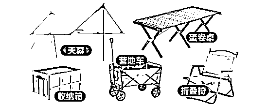
分别是，天幕，折叠桌，收纳箱，露营车，折叠椅还有一个帐篷
然后每个品呢又会细分非常多的款式和尺寸满足不同玩家的使用场景和需求
这几个大类是最容易产出爆款的，想多赚钱的就一定都要上，我的第一个月入1W就是桌子带来的，但是也有人仅靠天幕，椅子，车子实现月入1W的
刚需品就只给大家指个方向，细分款式大家自行去电商网站了解即可，而且一定要成套的上，且钢的，铝的，实木的都要上，很多客户来你家买一个大概率还有其他产品的需求的，组合卖我们单笔订单利润才会更高
非刚需品是指一些提升露营体验但不是必备的装备
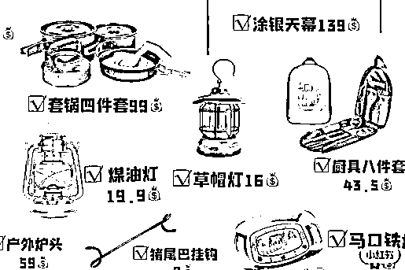
有马灯，锅碗，卡式炉，马口铁托盘，地毯，氛围灯，充气床，睡袋，置物架，水壶等等等等
可以卖的东西也非常多，大家根据自己的时间安排选上就可以，一般只用来做一个利润的补充
说完卖哪些品，我们就要去选择帮我们的发货渠道了
因为我们这个生意本质还是无货源模式，客户在我们这下单然后我们复制客户发货地从货源渠道那下单然后让那边帮我们代发
我们的货源渠道分别是拼多多和厂家代发
的话特别适合新手，也是很多人做闲鱼无货源的第一选择。因为同样一个产品在比起天猫，淘宝，京东在PDD的价格一般都是最低的，身边呢又有很多人没有用PDD购物的习惯，所以我们就可以利用这点信息差来赚钱
而且PDD售后是非常完善的，只要产品出了问题平台都会给你兜底，非常适合新手
基本上只要你发货不出差错基本上不会出什么问题。而且如果卖家那边出现物流故障，PDD还会给你发这种0门槛优惠券
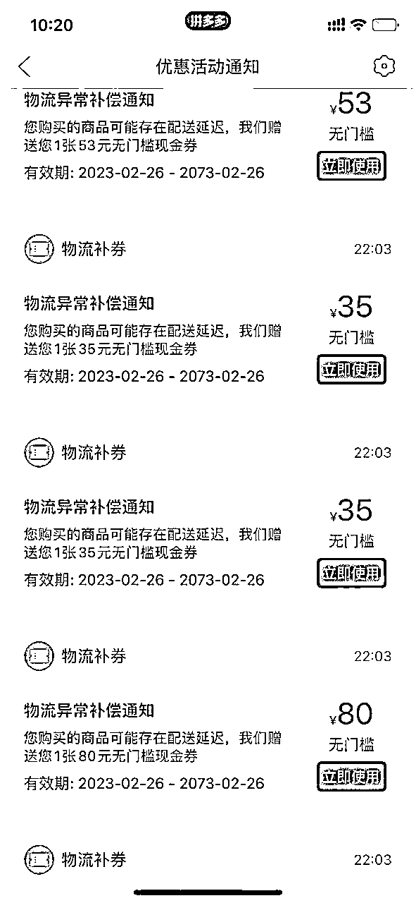
我这一年下来PDD给我送的优惠券都快有小2000的金额了
PDD的问题也很明显，需要改掉客户电话中间的一位数字，现在一般快递打不通收件人的电话就直接放快递点了，即使改掉一个数字也不影响买家收到货。
切记一定要改中间四位的一个，不要改最后四位，改了尾号买家是没办法去驿站那种地方报尾号拿的
不改电话的话，PDD会直接给客户发短信提示，如果客户收到了短信基本上是百分百退单
而且PDD的快递单上也会有PDD的提示，不过很少有买家会去注意这里，也不需要太担心，被抓包的概率大概是在3%左右，最坏的情况也是退货退款，退款PDD也有运费险。不过很多买家看你商品没有质量问题的话，你跟他好好协商退个差价他也不会说啥。
我自己也是一直都在用PDD发货的
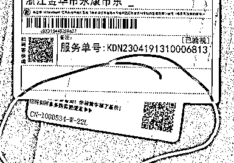
其次就是PDD上的商品价格浮动也大，同一个商品可能需要多找几家备用，防止他突然涨价
不过这些问题基本上都有对应的办法解决，也不需要太担心，新手刚做还是非常适合用PDD做代发的
厂家货源的优点就是，业务广价格低且稳定，谈好了不会轻易涨价只会降价。发货不会有面单客户也没有稀奇古怪的短信
而且在做闲鱼的很多玩家是没有这种货源的，光是这个渠道优势就能让你领先一大波做闲鱼的
先给大家看一组桌椅的价格对比
比如这款榉木大号蛋卷桌，淘宝均价在230-270，PDD在200-230，闲鱼普遍也是卖200-240。而我们的厂家最低的可以做到170一个包邮。
再来看个椅子
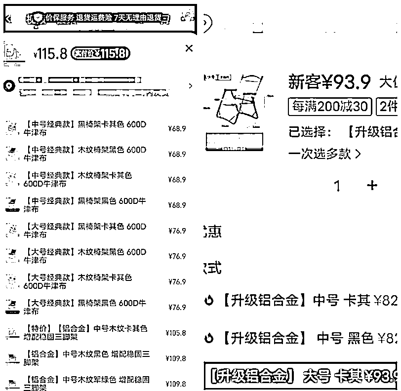
以这款铝合金折叠椅大号为例子，淘宝均价在110-125，PDD在95-105。而我们厂家发货的价格是大号76小号66
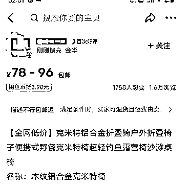
很多时候你只要用PDD的价格在闲鱼上就可以卖的很好了，而我就是用淘宝的价格在闲鱼卖
这都只是基础款的价格，有些定制款利润会更高
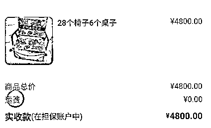
4月接的一个定制单，4800的销售额1300的净利润，非常香。这个就只有厂家货源才能实现的了
然后厂家这边的缺点就是，很多厂家不支持无理由退款，而且发货后退费需要买家或卖家承担发货运费。厂家是需要你一个一个去PDD闲鱼阿里上找的去联系，会比较费时间，因为现在做代发冒充厂家的太多了。跟厂家打交道需要有一定的沟通技巧，不然也拿不到合适的价格
我自己做这个生意已经做了一整年了，手里头沉淀了一批合作的比较久的厂家渠道，如果你想做这块的生意，可以有偿联系我提供，并且给商品价格都是我自己代发的价格
选好品找好货源我们就要着手上架的功夫了，上架商品能就先得把商品的文案和配图准备好
文案和配图这款也是我最看重一个地方，因为这部分是除了价格以外第二个影响客户购买决策地方，好的文案+好的配图是可以让你卖的比同行更贵同时又能有更多的下单
因为我本身是营销行业出身，所以我对这块文案的撰写会添加很多自己对产品以及用户心理的理解，我在之前写的闲鱼露营课程里是有系统的去教闲鱼文案怎么写的，这里就受篇幅限制只说个基础版
给大家看一个例子
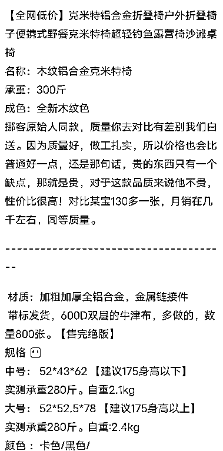
这就是一个非常标准且朴实的商品文案结构，标题+功能介绍+材质+尺寸+价格，然后再补充一些想对买家推荐的话，那一个基础产品文案就完成了，就可以拿去用了
我自己的话会花更多时间去挖掘研究产品的一些背景，厂家背景来做为卖点写到我的文案里面，这块的话需要跟客户有比较多的打交道的经验才能参悟到。新手就写基础的就可以
然后配图这块，一定要找到那种实拍图
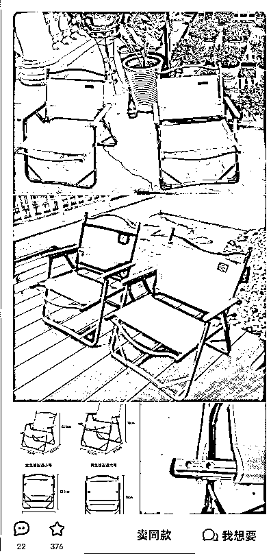
最好是这种看似朴实而实则又带一抹精致的图，这种图片在闲鱼上非常吸睛。类似的图片在小红书。淘宝评论区大把大把的找
切记不要用这种电商图，很不应景又不真实
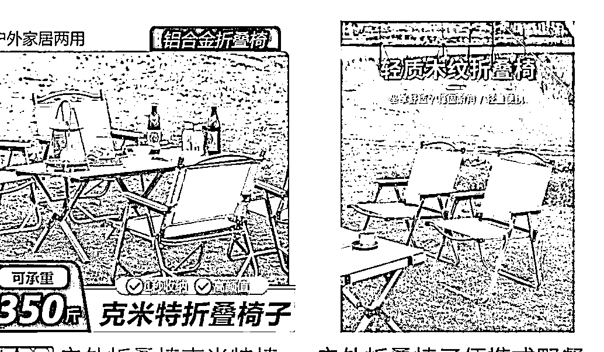
最后再给大家提个醒，就是图片和文案可以参考同行的，但是不要完全抄袭或者高度相似。闲鱼也是有查重机制的，重复度太高会影响推流
文案图片这块是最花时间也最需要去花时间的地方，我们运营这种垂直店铺就必须精细化对待才能做的出彩，每一个会影响客户下单的点都要认真对待。这个是不能偷懒的，我自己经常是为了找一个商品满意的图片能花两三个小时的
都准备好了之后我们就需要利用一些闲鱼的流量机制来给自己商品快速的带来一些流量，有流量才有单子
商品发布后，闲鱼会先给你推第一波曝光，然后再根据你的商品浏览、想要、成交来决定是否给你推更多的流
这里就教大家一个常用且非常好用的方法，就是标商品的最低价，引导买家来点我想要
给大家看个例子
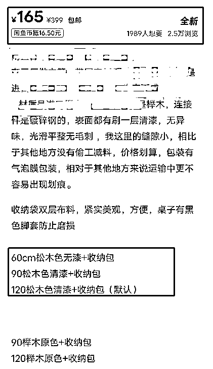
这个他发布的是一个实木折叠桌，桌子呢又分大中小三个型号。
我给大家做个假设这个桌子的成本价分别是：
140 160 180，我们目标利润是每一张赚45，那我们的标价就会是，185、205、225。但只有我们经常卖的人才知道，露营产品的小号一般是没什么人买的，基本上都是中和大。
所以我们就可以把小号的利润压到最低，卖165 155都可以，用来做我们的展示价格。然后配图首图就放最大号的，在文案里不标明价格，引导买家点“我想要”先拉一波流量
那么来的买家看到我们大号的价格也合适对产品描述也动心，那成交的概率也是很大的。
当然这只是一个小方法，类似的拉流量起号技巧还是有很多的，受篇幅限制我就不多讲了
短期拉流量起号的方法有很多，但是想要在闲鱼有长期稳定的流量还是要看你的经营数据
比如“及时回复”“好评率”“成交率”“售后率”之类的，这些数据稳定，闲鱼才会给你长期稳定的推流
其实当我们有了货源渠道之后，除了闲鱼。我们的生意还是可以延伸到其他平台的
做这个露营项目是非常容易接到一些大单的，因为现有一种新兴娱乐场所叫露营地，很多做露营地的老板回来闲鱼一次性大批量的采购，我基本上每个月都会有个一两个大单
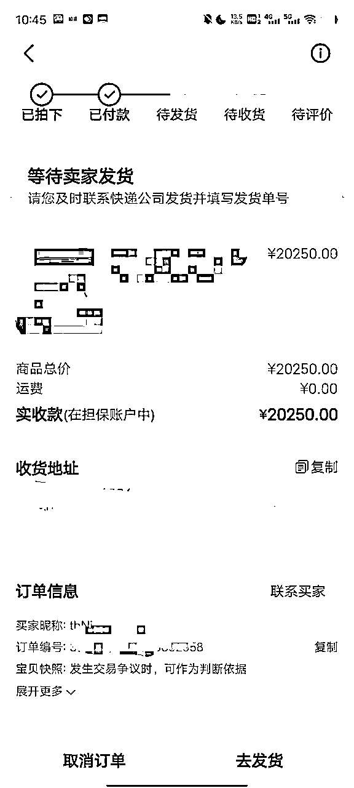
今年最大的一单是2W的销售额，然后这一单净利润就是3000+
除了露营地，现在很多餐厅，酒吧，咖啡，奶茶店，路边摆摊的都在走这种露营风格
然后这些大客户呢可以加到微信，沉淀到微信上，这样他们复购第一时间就会想到你
我自己微信是沉淀了快百来个大客户了
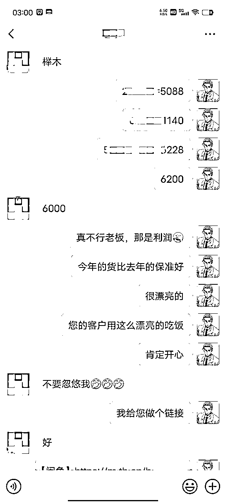
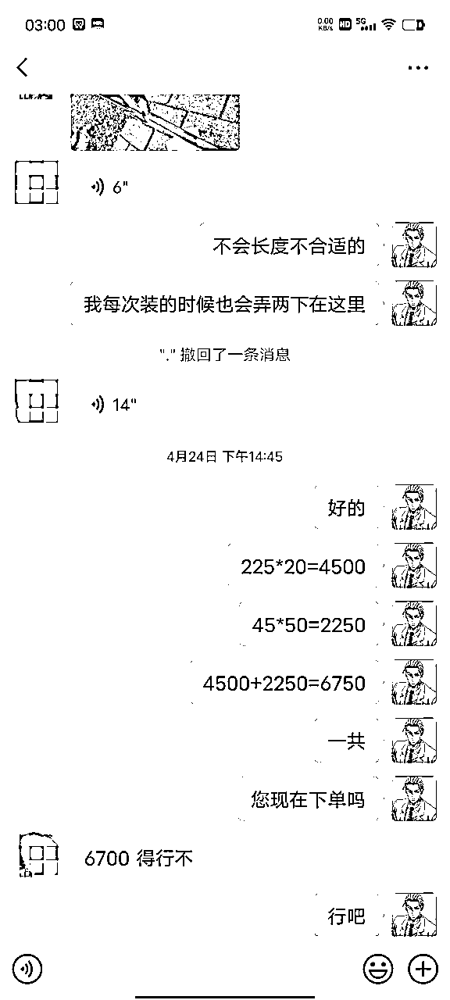
经常会在各种节假日前找我复购，老是给我带来一些意外之财。同时谈到新货源也可以发发朋友圈，没准刚好也是别人需要的
但做私域也有引流的风险，闲鱼抓引流是抓的特别严，轻易不要留微信或者电话，封号力度很大的。我一般都是客户下单后复制他的电话去微信搜索，搜不到的就直接一个电话打过去要微信联系。所以我基本上只加一些大客户
除了在闲鱼和私域经营我的生意呢，小红书我也是有做的，去年基本上是完全靠引流到微信成交，也从小红书赚了大几万了。今年小红书抓的严，就自己开了个店，经验数据没闲鱼好，但也不错
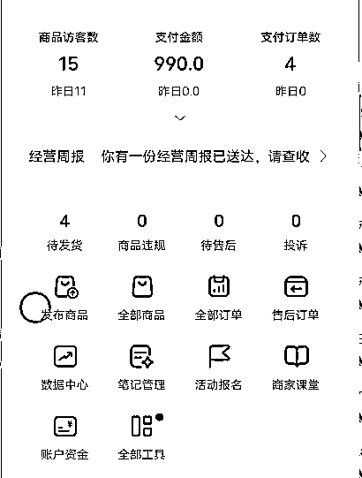
小红书的好处就是，你可以卖的比闲鱼更贵，小红书用户的消费能力真是一级棒。但是小红书开通店铺后对经营者的时间要求比较高，要及时回复，不然平台会限流你。我就是经常被限流
目前这个项目呢还是处在一个高峰期，买露营装备的人还是非常多的，而且闲鱼上做这个领域的人大部分都是没什么水平的，只会卷一卷价格
今年这个行情做新手来做这个项目，我觉得只要肯花时间月入3000-6000是完全没有问题的。这个我自己都算过了，目标月入3000，平均每天100，只需要卖出一套桌椅就能搞定，月入6000，那就每天卖两套，如果你说一个号一天就只能卖一套。。。。那你就再开一个号
而且马上就要进入今年的暑假了，暑假会有一波小高潮，很多家长会带孩子出去露营，又是一波消费市场
这个项目最花时间的地方就是前期在了解研究产品，应付售后这块，但这个是肯定绕不开的，很多新手都折停在了这一步
整个项目分享到这里就结束了，这也是我第一做的副业项目，从最开始摸爬滚打什么都卖到最后摸到了这个露营赛道然后持续深耕，到目前已经是刚好一整年了，同时也是加入生财的一整年，给我带来的收益还是非常可观的
也欢迎想做这个赛道以及正在做这个赛的朋友跟我一起交流成长。我感觉现在大环境下普通人想找到发财的机会已经很渺茫了，但是留给我们普通人赚点小钱发点小钱的机会还是有很多的
最后再感谢一下生财团队组织这么用心的去组织一个搞钱圈子，普通人能接触到这些信息真的很棒